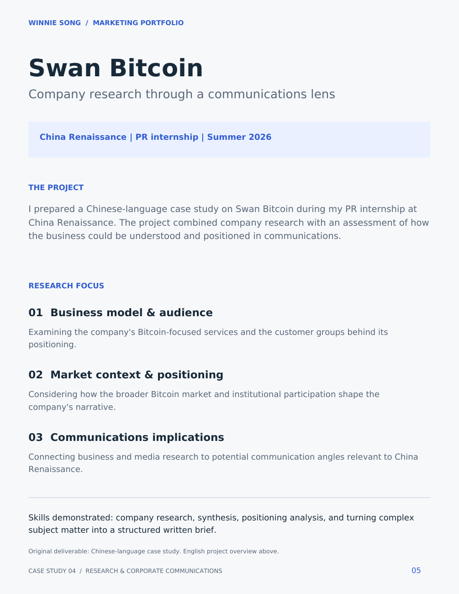

China Renaissance · Summer 2026
Swan Bitcoin Research
Company research through a communications lens.
The project
During my PR internship at China Renaissance, I prepared a Chinese-language case study on Swan Bitcoin. The project combined business research with an assessment of how the company could be understood and positioned in communications.
My research focus
I examined the company's business model and audience, considered its market context and positioning, and connected those findings to potential communication angles relevant to China Renaissance.
Skills demonstrated
Company research, information synthesis, positioning analysis, and translating complex subject matter into a structured written brief.

This page presents the English project overview. The original Chinese-language research deliverable is not included.
View portfolio reference (PDF) ↗